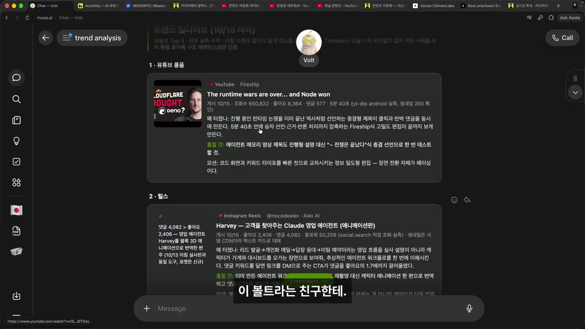
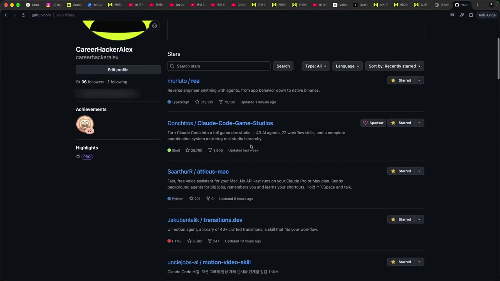
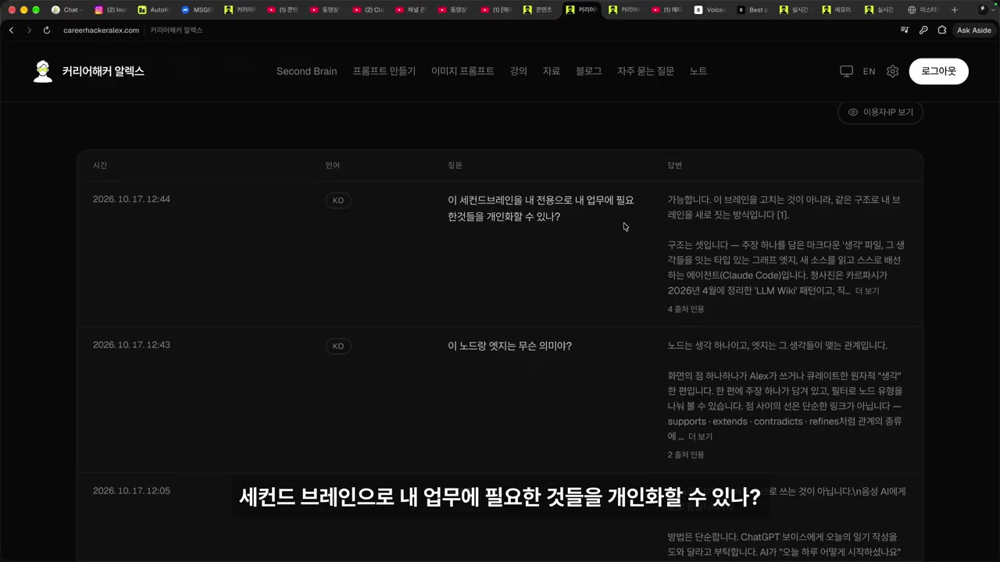
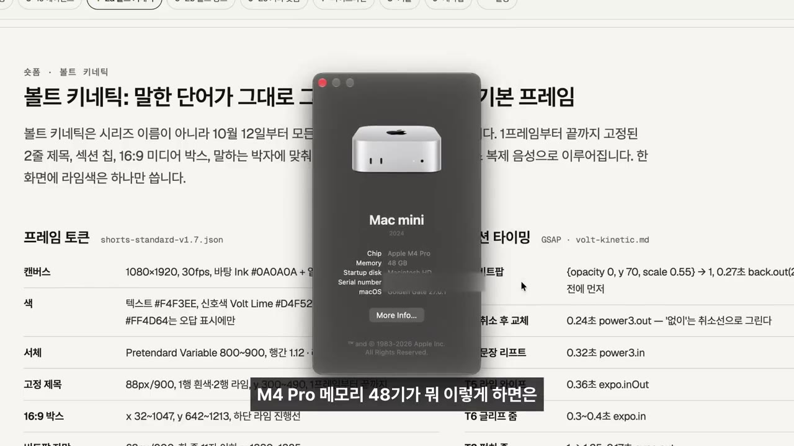

한눈에 보기
- 라이브 Q&A에서 나온 질문 16개에 대한 답을 모은 영상으로, 결론은 "거의 모든 것을 자동화할 수 있어도 차별화는 나의 관점·스타일·목소리에서 나온다"이다.
- AI 콘텐츠 소재는 SNS를 직접 돌면서 찾고, 에이전트가 매일 '조회수 터진 영상'과 '훔칠 포인트'를 모아 보내도록 자동화해 두었다.
- 요즘 뜨는 GitHub 리포는 그대로 설치하지 않고, 나를 잘 아는 에이전트에게 "내 작업에 어떻게 쓸지" 물어 아이디어만 뽑아 내 도구를 업데이트한다.
- 에이전트가 하는 모든 작업은 클라우드 메모리에 쌓아야 어떤 기기·어떤 에이전트에서도 같은 맥락으로 일한다 — Obsidian처럼 내 PC에만 있는 기록은 한계가 있다.
- 메모리 시스템 평가(eval)는 LongMemEval·LoCoMo 벤치마크에서 시작하고, 온라인·오프라인·정성 평가가 모두 필요하다.
이런 분께 도움이 됩니다
- AI·비즈니스 콘텐츠를 만들고 싶은데 소재 찾기와 트렌드 따라가기가 버거운 1인 크리에이터
- 쏟아지는 GitHub 리포·새 기법을 어떻게 골라 써야 할지, AI 활용 실력이 정체됐다고 느끼는 사람
- Second Brain·에이전트 메모리를 직접 만들고 있거나 만들려는 사람
핵심 내용
결론: 자동화의 시대, 차별화는 '나'에게서 나온다
- 라이브처럼 질문을 받고 실시간으로 답하며 날것을 보여 주는 것은 모방할 수 없기 때문에 콘텐츠의 꽃이 될 것이라고 본다. (0:00)
- '스타일을 소유한 사람'이 되려면 나만의 색깔·감성·경험·전문성을 더해야 한다. (5:23)
- '딸깍'(클릭 한 번 자동 생성)이나 리버스 엔지니어링으로 똑같이 만드는 건 누구나 할 수 있다.
- "똑같이 만들었는데 왜 내 것을 봐야 하나?" — 그 차이가 핵심.
- 마무리 메시지: 거의 모든 것을 자동화할 수 있으니, 나의 개성·관점·시선·스타일·보이스로 차별성을 갖고 계속 깎고 테스트하고 검증하며 수련해야 한다. (9:25)
💡 자동화는 누구나 한다 — 남는 건 나만의 관점과 목소리다.
AI 콘텐츠 소재 찾기: 트렌드 분석 자동화
- 기본은 SNS를 모두 도는 것이다. X에서 Claude Code를 다루는 국내외 사람들을 팔로우해 본다. (0:22)
- 직접 만든 '트렌드 분석 자동화'를 매일 돌린다. (0:48)
- 자막상 '뮤즈'라는 서비스로 만들었고, 에이전트 캐릭터 이름은 '볼트'.
- 하루 한 번 조회수가 크게 터진 유튜브 영상을 긁어와 보내 준다.

- 예시 결과: "진행 중인 논쟁을 이미 끝난 역사처럼 선언하는 종결형 제목이 클릭을 유도" → 훔칠 컷: "에이전트 메모리 영상 제목도 진행형 대신 '전쟁은 끝났다' 식으로 테스트".
- 뮤즈를 쓴 이유: Meta가 만들어 Threads·Facebook·Instagram을 갖고 있으니 이런 콘텐츠를 누구보다 잘 찾을 것이라 판단.
- 다 보지는 못하지만 최대한 따라가며, 떠오른 아이디어는 노트에 담아 "이거 따라 해볼까?" 식으로 쌓는다. 솔직히 정신없다고 말한다. (1:44)
💡 소재는 '찾는 일'이 아니라 '매일 받아 보는 일'로 바꿔 둔다.
GitHub 리포·새 기법은 그대로 쓰지 않고 '뽑아먹는다'
- 질문: 별 많은 리포를 가져다 쓰고 싶지만 지금 하니스(harness, 에이전트를 돌리는 내 기본 틀)가 꼬일까 걱정되고, 브랜치를 나눠 테스트하기는 번거롭다. (6:33)
- 답: 그대로 가져와 쓰는 경우는 거의 없다 — 내 것과 맞지 않기 때문에 아이디어만 가져온다. (7:27)
- 흐름은 아래와 같다.
🔁 새 리포를 내 것으로 만드는 순서
- 스타 해 두기
- 에이전트에 추천 요청
- 골라 적용하기
- 내 도구 업데이트
- 1스타 해 두기
하루에도 수십~수백 개 나오는 리포 중 괜찮은 것을 GitHub에서 스타(별표) 해 둔다

GitHub Stars 목록: transitions.dev·motion-video-skill 등 · ▶ 7:04 - 2에이전트에 추천 요청
"이 리포로 우리가 어떻게 활용해 볼 수 있을까? 너는 나와 내 작업을 모두 아니까 살펴보고 추천해 줘"라고 묻는다
- 3골라 적용하기
트랜지션·모션그래픽·오픈 슬라이드 등 여러 개를 시험해 쓸 것은 적용하고 필요 없는 건 지운다
- 4내 도구 업데이트
리포를 설치하지 않고 핵심만 뽑아 내 것을 업데이트하게 한다
- 이 방식이 되려면 에이전트가 내 맥락·프로젝트·지식을 알고 있어야 한다 — 그래서 클라우드 메모리가 중요하다.
AI 실력이 정체될 때 공부하는 법
- 남들은 어떻게 쓰는지, 새 스킬·새 프로젝트가 뭔지, 사람들이 어디서 뭘 쓰는지를 계속 본다. 예: x.com에 들어가 훑어보기. (8:07)
- 관련 계정을 많이 팔로우해 두면 새 소식이 끝없이 뜬다.
- 새 리포(예: '오픈 크리에이터')를 찾으면 바로 에이전트에게 "여기서 우리가 빼먹고 써먹을 스킬이나 전략이 뭔지 분석해 줘"라고 시킨다. (8:27)
- 쓸 것과 버릴 것을 고르려면 나의 아이덴티티·프로젝트·디렉션·미션·가치 제안(value proposition)이 먼저 있어야 한다.
💡 공부는 끝이 없다 — 기준(나의 방향)이 있어야 취사선택이 된다.
Second Brain과 클라우드 메모리
- 에이전트가 하는 모든 일을 자동으로 클라우드 메모리 베이스에 저장한다. 어떤 에이전트·어떤 기기·어디서 일을 시키든 같은 맥락으로 답하게 하기 위해서다. (5:50)
- Obsidian은 내 PC에 마크다운 파일로만 있어 다른 컴퓨터에서 못 쓴다 — 스케일하려면 클라우드로 가야 한다. (3:26)
- Second Brain이 커져도 컨텍스트·성능 문제는 아직 없었다. (2:40)
- 메모리 평가 벤치마크가 매우 큰 컨텍스트로 평가하기 때문에, 처음부터 그걸 고려해 설계했다.
- 현재 규모: 본인 기준 하루 약 50세션. 10명이면 500개, 100명까지는 될 것 같고 그 이상은 최적화가 많이 필요할 것으로 본다.
- '컴프리 브레인' 규모에서는 다르다고 언급(자막상 불분명).
- 공개해 둔 Second Brain에 시청자가 질문하면 본인 생각대로 답해 주고, 들어온 질문을 가끔 확인한다.
- 개인화 가능? → 가능하다.
- 노드와 엣지? → 노드는 생각(개념), 엣지는 그 사이의 관계.

메모리 평가(eval)는 어디서 시작하나
- 쉽게 답할 수 없는 질문이라면서도, 온라인 eval·오프라인 eval·정성(qualitative) eval이 모두 필요하다고 정리한다. (4:30)
- 시작점은 LongMemEval과 LoCoMo라는 메모리 벤치마크다.
| 평가 종류 | 뜻(설명란 기준) |
|---|---|
| offline eval | 정답이 있는 질문 세트로 채점 |
| online eval | 실제 사용 중 지표로 측정 |
| qualitative eval | 사람이 읽고 기준에 따라 판단 |
장비·도구·비용
| 항목 | 사용 중인 것 |
|---|---|
| 마이크 | Shure SM7DB — 여러 개 써 봤는데 제일 좋았다 |
| 컴퓨터 | Mac mini M4 Pro, 메모리 48GB — 웬만한 건 다 됨. MacBook Air도 가능 |
| AI 구독 | Claude Max 3개(월 약 600달러, 약 100만 원) + Codex |
- 큰 사양이 꼭 필요하지 않다 — 맥북이면 웬만하면 다 된다고 본다. (2:29)

짧은 답변들
따라 해보기
준비물
- 웹 검색이 되는 AI 에이전트(영상: Claude 구독·Codex, 트렌드 자동화는 '뮤즈')
- 내 채널 주제·타깃 시청자, 스타 해 둔 GitHub 리포 주소
- 비용: 영상 속 사용자는 Claude Max 3개(월 약 600달러). 무료·저가 플랜으로도 프롬프트 자체는 시험 가능(보충)
- 소요 시간: 프롬프트당 수 분~수십 분
단계별 방법
🔁 설명란 실습 순서
- 트렌드 소재 모으기
- 내 맥락 카드
- 스타 리포 추천받기
- 새 리포 뜯어보기
- 메모리 평가 시작
- 1트렌드 소재 모으기
아래 '1단계 프롬프트'에 분야·기간·내 채널을 채워 넣고 실행해, 터진 콘텐츠 10개와 훔칠 포인트를 표로 받는다 (0:48)
- 2내 맥락 카드
하는 일·쓰는 도구·요즘 막힌 문제를 한곳에 정리해 둔다. 3·4단계에 붙여 넣을 재료다
- 3스타 리포 추천받기
스타 해 둔 리포 주소와 내 맥락을 넣어 '3단계 프롬프트'로 가져올 아이디어·버릴 부분을 받는다 (7:00)
- 4새 리포 뜯어보기
새로 발견한 리포를 '4단계 프롬프트'로 분석해 이번 주에 써 볼 것 1개를 고른다 (8:27)
- 5메모리 평가 시작
메모리 에이전트를 만들고 있다면 '5단계 프롬프트'로 첫 주 평가 계획과 예시 질문 10개를 만든다
1단계에 입력할 내용 (○○ 채우기)
웹 검색으로 최근 ○일 동안 YouTube·Instagram 릴스·Threads·X에서 평소보다 반응이 크게 터진 ○○ 분야 콘텐츠 10개를 찾아 줘. 내 채널은 ○○(주제·타깃 시청자)야. ① 링크와 조회·반응 수치 ② 왜 터졌는지 한 줄 ③ 내가 가져올 "훔칠 포인트" ④ 내 채널용 제목 실험안 1개를 표로 정리해 줘. 완료 기준: 확인 못 한 수치는 "확인 불가"로 적고, 이번 주에 만들 아이디어 3개로 끝낸다. 어떤 계정에도 로그인하거나 글을 올리지 마.
3단계에 입력할 내용
GitHub 리포 ○○(주소)를 살펴보고 내 작업에 어떻게 쓸지 추천해 줘. 내 맥락: 하는 일 ○○, 쓰는 도구 ○○, 요즘 막힌 문제 ○○. ① 이 리포가 푸는 문제 ② 내 작업에 가져올 아이디어 3개와 붙일 곳 ③ 그대로 가져오면 충돌할 부분 ④ 버릴 부분을 정리해 줘. 완료 기준: 아이디어마다 어디에·어떻게·기대 효과가 한 줄씩 있고, 가장 작게 시험할 실험 1개로 끝난다. 내 파일을 바꾸거나 설치·커밋·배포하지 말고 제안만 해.
4단계에 입력할 내용
새로 찾은 오픈소스 리포 ○○(주소)를 분석해 줘. 나는 ○○(예: 1인 크리에이터, 주 ○편 영상)을 만들어. 여기서 빼먹고 써먹을 스킬·워크플로·전략을 찾아 ① 리포가 하는 일 3줄 요약 ② 가져올 것 최대 5개와 붙일 곳·난이도(상·중·하) ③ 내 방식과 맞지 않아 버릴 것을 정리해 줘. 완료 기준: 이번 주에 바로 써 볼 것 1개를 골라 첫 단계까지 적는다. 리포를 설치·실행하거나 어떤 계정에도 로그인·게시하지 마.
5단계에 입력할 내용
내 기록을 기억하고 답하는 메모리 에이전트 ○○가 제대로 기억하는지 평가할 계획을 세워 줘. ① LongMemEval과 LoCoMo가 각각 무엇을 재는지 ② offline eval(정답이 있는 질문 세트) ③ online eval(실제 사용에서 재는 지표) ④ qualitative eval(사람이 읽고 판단할 기준)을 정리하고, 내 데이터 ○○로 예시 질문 10개(질문·기대 답·채점 기준)를 만들어 줘. 완료 기준: 첫 주에 돌릴 순서가 있고, 확인 못 한 수치는 추측하지 않는다.
따라 할 수 있는지 점검
- ✅ 바로 따라 할 수 있음: 3·4·5단계 — 프롬프트 원문이 설명란에 있어 ○○만 채우면 된다.
- ⚠️ 1단계 「트렌드 소재 모으기」: 영상은 '매일 자동으로 받는' 결과만 보여 주고, 뮤즈에서 예약 실행을 거는 메뉴·설정은 안 나온다 → 일단 수동으로 실행하고, 매일 자동화는 쓰는 도구의 예약 작업(스케줄) 기능을 공식 도움말에서 찾아 설정(보충).
- ⚠️ 1단계 「트렌드 소재 모으기」: 웹 검색 기능이 없는 AI면 수치를 못 가져온다 → 웹 검색이 켜진 모델·플랜을 쓴다(보충). 프롬프트대로 확인 못 한 수치는 '확인 불가'로 받는다.
- ⚠️ 2단계 「내 맥락 카드」: 설명란에 '빈 틀이 들어 있다'고만 있고 틀 자체는 영상·설명란에 없다 → 3단계 프롬프트의 '하는 일·쓰는 도구·요즘 막힌 문제' 세 항목으로 직접 만든다(보충).
- ⚠️ 3단계 「스타 리포 추천받기」: 영상 속 사용자는 에이전트가 클라우드 메모리로 자기 맥락을 이미 알고 있어 짧게 묻는다. 이런 메모리가 없으면 → 맥락 카드를 매번 프롬프트에 붙여 넣는다.
- ❓ 트렌드 자동화에 쓴 '뮤즈'가 정확히 어떤 서비스인지 자막상 불분명(Meta가 만들었다고만 언급).
확인 방법
- 1단계: 표에 링크·수치(또는 '확인 불가')·훔칠 포인트·제목 실험안이 있고, 이번 주 아이디어 3개로 끝나면 성공.
- 3·4단계: 아이디어마다 '어디에·어떻게·기대 효과'가 있고, 가장 작은 실험 1개가 정해지면 성공. 내 파일이 바뀌지 않았는지도 확인.
- 5단계: 질문·기대 답·채점 기준이 있는 예시 질문 10개와 첫 주 실행 순서가 나오면 성공.
막히면
- 좋은 리포라도 그대로 설치하지 않는다 — 하니스가 꼬일 수 있다. 아이디어만 가져와 내 것을 고친다.
- 쓸 것·버릴 것이 안 골라지면 기준이 없는 것 — 내 디렉션·미션부터 맥락 카드에 적는다.
- 트렌드를 다 보려 하면 정신없다. 영상 속 사용자도 다 못 본다고 인정한다 — 노트에 담아 두고 골라 쓴다.
기억할 숫자·인용
- 마이크: Shure SM7DB / 컴퓨터: Mac mini M4 Pro, 메모리 48GB
- AI 구독: Claude Max 3개, 월 약 600달러(약 100만 원) + Codex
- 메모리 규모: 하루 약 50세션, 10명이면 500개, 약 100명까지는 버틸 것으로 예상
- 메모리 벤치마크: LongMemEval, LoCoMo
- "똑같이 만들었는데 왜 내가 너의 것을 봐야 될까? 그 차이가 핵심이라고 생각합니다."
- "그대로 가져와서 쓰는 경우는 거의 없습니다. 그냥 아이디어만 가져옵니다."
- "거의 모든 것을 자동화할 수 있고, 정말 중요한 건 나의 개성, 나의 관점, 시선, 스타일 그리고 나의 보이스."
생각해볼 점
- (영상 내용) 월 100만 원 규모의 구독과 직접 만든 클라우드 메모리를 전제로 한 방식이다. (내 의견) 같은 효과를 내려면 비용·구축 부담을 따져 보고, 맥락 카드를 붙여 넣는 수동 방식부터 시작하는 편이 현실적이다.
- (영상 내용) 터진 콘텐츠의 '훔칠 포인트'를 가져오라고 한다. (내 의견) 결론에서 강조한 '나만의 스타일'과 부딪히지 않도록, 형식(제목 구조 등)만 빌리고 내용은 내 관점으로 채우는 선을 정해 두는 게 좋다.
- (영상 내용) 서브 에이전트 구성은 Claude에 맡기고 거의 안 본다고 한다. (내 의견) 결과 품질이 중요한 작업이라면 최소한의 점검은 필요할 수 있다 — 영상 속 사용자도 메모리 시스템에는 eval을 강조했다.
바로 해볼 일
- 1단계 트렌드 프롬프트에 내 분야·채널을 채워 한 번 돌려 보고, 이번 주 아이디어 3개 고르기
- '하는 일·쓰는 도구·요즘 막힌 문제' 세 줄로 내 맥락 카드 만들기
- 스타 해 둔 GitHub 리포 1개를 3단계 프롬프트로 분석해 가장 작은 실험 1개 정하기